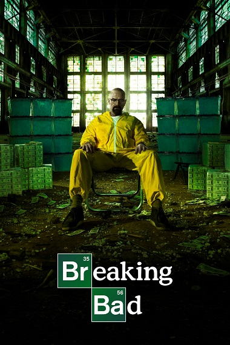

Breaking Bad
4.8/5(Ratings)
About the Series
Season 1 (2008),Season 2 (2009),Season 3 (2010),Season 4 (2011),Season 5 (2012–13)
Breaking Bad is an American crime drama television series created and produced by Vince Gilligan. Set and filmed in Albuquerque, New Mexico, the series follows Walter White (Bryan Cranston), an underpaid, overqualified, and dispirited high-school chemistry teacher who is struggling with a recent diagnosis of stage-three lung cancer. Walt turns to a life of crime and partners with a former student, Jesse Pinkman (Aaron Paul), to produce and distribute crystal meth to secure his family's financial future before he dies, while navigating the dangers of the criminal underworld. The show aired on AMC from January 20, 2008, to September 29, 2013, consisting of five seasons for a total of 62 episodes.
Among the show's co-stars are Anna Gunn and RJ Mitte as Walter's wife Skyler and son Walter Jr., and Betsy Brandt and Dean Norris as Skyler's sister Marie Schrader and her husband Hank, a DEA agent. Others include Bob Odenkirk as Walter's and Jesse's sleazy lawyer Saul Goodman, Jonathan Banks as private investigator and fixer Mike Ehrmantraut, and Giancarlo Esposito as drug kingpin Gustavo Fring. The final season introduces Jesse Plemons as the criminally ambitious Todd Alquist, and Laura Fraser as Lydia Rodarte-Quayle, a cunning business executive secretly managing Walter's global meth sales for her company.
Breaking Bad's first season received generally positive reviews, while the rest of its run received unanimous critical acclaim. Since its conclusion, the show has been lauded by critics as one of the greatest television series of all time. It had fair viewership in its first three seasons, but the fourth and fifth seasons saw a moderate rise in viewership when it was made available on Netflix just before the fourth season premiere. Viewership increased more drastically upon the premiere of the second half of the fifth season in 2013. By the time that the series finale aired, it was among the most-watched cable shows on American television. The show received numerous awards, including 16 Primetime Emmy Awards, eight Satellite Awards, two Golden Globe Awards, two Peabody Awards, two Critics' Choice Awards, and four Television Critics Association Awards. Cranston won the Primetime Emmy Award for Outstanding Lead Actor in a Drama Series four times, while Aaron Paul won the Primetime Emmy Award for Outstanding Supporting Actor in a Drama Series three times; Anna Gunn won the Primetime Emmy Award for Outstanding Supporting Actress in a Drama Series twice. In 2013, Breaking Bad entered the Guinness World Records as the most critically acclaimed TV show of all-time.
The series gave rise to the larger Breaking Bad Franchise. A sequel film, El Camino: A Breaking Bad Movie, was released on October 11, 2019, which wrapped up Jesse's story. Better Call Saul, a prequel and occasional sequel series featuring Odenkirk, Banks, and Esposito reprising their Breaking Bad roles, as well as many others in guest and recurring appearances, debuted on February 8, 2015, and finished airing its sixth and final season on August 15, 2022.
Preview
MORE SERIES WILL BE UPDATED SOON